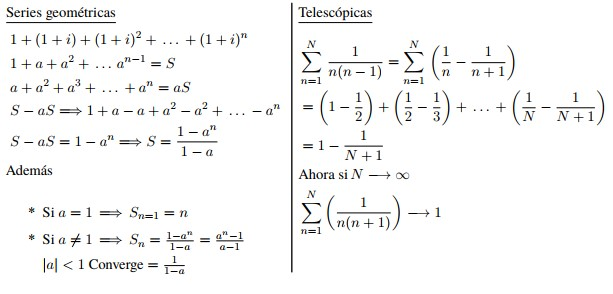
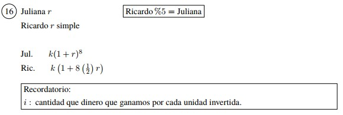
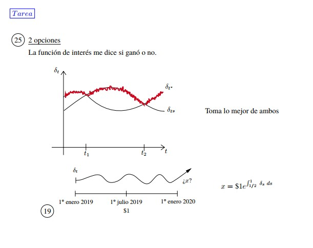

Matemáticas Financieras
2022-03-02
Capítulo 1 Teoría del interés
Definición 1.1 (Definición de Interés) El interés se puede definir como una compensación/beneficio que una parte A le da a una parte B por dejar de satisfacer una necesidad para que el otro satisfaga la propia.
Solo pensando en términos monetarios… ¿Por qué las inversiones (en teoría ) crecen? Algunos factores que intervienen en una inversión:
- Dinero (¿cuánto tiempo?)
- ¿En qué se invierte?
- ¿Cuánto tiempo lo invierto?
- Inflación
- Bajo que condiciones contractuales lo invierto (¿cómo crece el dinero ?)
- Oferta y demanda
- ¿Cuándo lo invierto?
Por un momento(grande) pensemos que el nivel de inversión depende solo del tiempo.
Teorema 1.1 Se dice que una función \(a:\left[ 0,\infty \right) \longrightarrow \mathbb{R}\) es una función de acumulación si cumple:
- \(a(0) = 1\)
- \(a\left(\cdot\right)\) es no-decreciente
- \(a(\cdot)\) es continua por la derecha y con límite por la izquierda.
\(a(t)\) representa el valor acumulado de \(\$1\) que hay durante un lapso de tiempo t.
Ejemplo 1.1 .
\(a(t) = 1+ct\), \(c>0\), \(c\) constante (interés simple)
\(a(t) = e^{\alpha t}\), \(\alpha > 0\) (interés compuesto)
\(a(t) = ct^2 + 1\), \(c>0\)
\(a(t) = 1\)
\(a(t) = (1+t)^c\), $c>0
\(a(t) = 1 + arctang(t)\)
\(a(t) = \sqrt{t+1}\)
\(a(t) = \sqrt{t} + 1\)
\(a(t) = 1 + c\left[ t \right]\)
\(a(t) = e^{\left[ t \right]}\)
Definición 1.2 Se define la función de monto correspondiente a \(a(t)\) como un capital inicial \(k>0\), como \[ A_k \left( t \right) : = k \cdot a \left( t\right)\]
Observación. Se cumple (1) y (3), pero \(A_k(0) = k \cdot a(0) = k \cdot 1 = k\)
\(A_k(t)\) representa el valor acumulado de una inversión de un lapso de tiempo t.
Representación gráfica

¿Cómo medimos el performance de una función de acumulación o función de monto?
Estudiaremos 3 indicadores:
- Tasa efectiva de interés al tiempo t
- Tasa de descuento al tiempo t
- Fuerza de interés
Definición 1.3 Para una función de acumulación \(a\left( \cdot \right)\) se define la tasa efectiva de como: \[ i_t := \frac{a\left( t \right) - a\left( t -1 \right)}{a\left( t - 1 \right)}\]
Interpretación: Por cada peso invertida al tiempo \(t-1\) hay \(i_t\) unidades de ganancia. “Lo que yo gané por cada peso que invertí”.
Ejemplo 1.2 .
Para \(a(t) = 1 + ct\) \(i_t = \frac{a\left( t \right) - a\left( t -1 \right)}{a\left( t - 1 \right)} = \frac{1 + ct - \left[ 1 + c(t-1)\right] }{1+c(t-1)} = \frac{c}{1+c(t-1)}\) Obsérvese que la aplicación \(t \longmapsto i_t = \frac{c}{1+c(t-1)}\) es decreciente. Con la función \(a(t) = 1 + ct\) ganamos, pero cada vez menos conforme el tiempo avanza.
Para \(a(t) = e^{\alpha t}\), \(\alpha > 0\) \(i_t = \frac{a\left( t \right) - a\left( t -1 \right)}{a\left( t - 1 \right)} = \frac{e^{\alpha t} - e^{\alpha (t-1)}}{e^{\alpha (t-1)}} = \frac{e^{\alpha (t-1)}\left[ e^{\alpha}-1\right]}{e^{\alpha (t-1)}} = e^{\alpha} -1\) Obsérvese que la aplicación \(t \longmapsto i_t = e^{\alpha} -1\) es constante.
tarea
Para \(a(t)= e^{t^2}\) calcular \(i_t\) y ver si \(t \longmapsto i_t\) es creciente o decreciente
- \(a(t) = (1+c)^t\), \(c > 0\) \(i_t = \frac{a\left( t \right) - a\left( t -1 \right)}{a\left( t - 1 \right)} = \frac{(1+c)^t - (1+c)^{t-1}}{(1+c)^{t-1}} = \frac{(1+c)^{t-1}[(1+c)-1]}{(1+c)^{t-1}} = 1+c-1 = c\) Obsérvese que la aplicación \(t \longmapsto i_t = e^{\alpha} -1\) es constante.
Observación. Los ejemplos 2 y 3 son los mismos \((1+c)^t=e^{log\left((1+c)^t \right)} = e^{tlog(1+c)}=e^{\alpha t}\), con \(\alpha = log(1+c)\).
En el mundo financiero preferimos escribir a la función exponencial como \((1+c)^t\).
Notación
En realidad preferimos escribir a la función exponencial como \(a(t) = (1+i)^t\). Bajo esta notación \(i_t = c = i\), es decir, \(i_t=i\).
Al número “\(i\)” le llamamos tasa efectiva de interés, y al modelo \(a(t)=(1+i)^t\) se le conoce como el modelo de interés compuesto..
Observación. \(\frac{A_k(t)-A_k(t-1)}{A_k(t-1)}=\frac{ka(t) - ka(t-1)}{ka(t-1)} = \frac{a(t)-a(t-1)}{a(t-1)} = i_t\)
Definición 1.4 Para una función de acumulación \(a(t)\) diferenciable, se define la correspondiente a \(a(\cdot)\) como
\[\begin{equation*} \boxed{ \delta_t : = \frac{\frac{\partial}{\partial t} a(t)}{a(t)} }\end{equation*}\]
¿De dónde viene esa definición?
Observación. \(\delta_t\) también se puede obtener como \(\frac{\partial}{\partial t} log(a(t)) = \frac{a'(t)}{a(t)} = \delta_t\)
Ejemplo 1.3 .
- \(a(t)=e^{\alpha t}\)
\(\delta_t = \frac{a'(t)}{a(t)} = \frac{\left( e^{\alpha t}\right)'}{e^{\alpha t}} = \frac{\alpha e^{\alpha t}}{e^{\alpha t}} = \alpha\)
\(\therefore \delta_t = \alpha\), con \(\alpha\) constante
- \(a(t) = 1+ct\)
\(\delta_t = \frac{a'(t)}{a(t)} = \frac{\left( 1+ct\right)'}{1+ct} = \frac{c}{1+ct}\)
\(\therefore t\longmapsto \delta_t\) es decreciente
Definición 1.5 Para una función de acumulación \(a(\cdot )\) se define la tasa efectiva de descuento al tiempo t como: \[\begin{equation*} \boxed{d_t := \frac{a(t)-a(t-1)}{a(t)}} \end{equation*}\]
También se conoce como tasa efectiva de descuento en el intervalo \(\left[ t-1, t\right]\). ¿Cómo se interpreta \(d_t\)?
Por cada unidad de \(a(t)\) hay \(d_t\) unidades de \(a(t)-a(t-1)\). “Por cada peso obtenido hay \(d_t\) pesos de ganancia obtenida”.
Ejemplo 1.4 .
- \(a(t) = (1+i)^t\)
\(d_t = \frac{a(t) - a(t-1)}{a(t)} = \frac{(1+i)^t - (1+i)^{t-1}}{(1+i)^t} = 1 - (1+i)^{-1} = \frac{1+i-1}{1+i} = \frac{i}{1+i} = c\)
donde \(c\) es una constante
- \(a(t) = 1+it\)
\(d_t = \frac{a(t) - a(t-1)}{a(t)} = \frac{1 + it - (1 + i(t - 1))}{i + it} = \frac{i}{1 + it}\)
Observación. La aplicación \(t \longmapsto d_t = \frac{i}{1 + it}\) es decreciente.
- Supongamos que un banco le ofrece darte un porcentaje \(c\) por cada cada peso invertido al final de cada periodo, sin posibilidad de reinvertir las ganancias.
¿Cuánto dinero tendré al final de \(n\) periodos? Supongamos que hoy invertimos \(K\).
\(\longrightarrow\) ¿Cuánto dinero tendré al final de 1 periodo? \[ \underbrace{K}_{\text{Inicial}} + \underbrace{Kc}_{\text{Ganancia}} = K(1+c)\]
\(\longrightarrow\) ¿Cuánto dinero tendrá al final de 2 periodos? \[ \underbrace{K(1+c)}_{\text{Ya lo tenía}} + \underbrace{Kc}_{\text{Ganancia}} = K(1+2c)\]
Inductivamente, el dinero al final de \(n\) periodos es \(K(1+n\cdot c)\), \(n\in \mathbb{N}_+\).
- Ahora, con la posibilidad de reinvertir las ganancias:
Supóngase que un banco le ofrece darle un porcentaje por cada peso invertido al final de cada periodo con posibilidad de reinvertir las ganancias.
\(\longrightarrow\) ¿Cuánto dinero tendré al final de 2 periodos? \[ \underbrace{K(1+c)}_{\text{Ya lo tenía}} + \underbrace{K(1+c)\cdot c}_{\text{Ganancia}} = K(1+c)(1+c) = K(1+c)^2\]
\(\longrightarrow\) ¿Cuánto dinero tendré al final de 3 periodos? \[ \underbrace{K(1+c)^2}_{\text{Ya lo tenía}} + \underbrace{[K(1+c)^2]c}_{\text{Ganancia}} = K(1+c)^2(1+c) = K(1+c)^3\]
Inductivamente el dinero al final de \(n\) periodos es \(k(1+c)^n\), \(n\in \mathbb{N}_+\).
\(\longrightarrow\) A 1. se le conoce como la génesis económica del interés simple, \(a(n) = 1+cn\), y nos gusta escribirla como \(a(n) = 1+in\), donde a \(i\) se le llama tasa efectiva de interés simple.
\(\longrightarrow\) A 2. se le conoce como génesis económica del interés compuesto, \(a(n) = (1+c)^n\), y nos gusta escribirla como \(a(n) = (1+i)^n\), donde a \(i\) se le conoce como tasa efectiva de interés.
Definición 1.6 Se dice que una función de acumulación \(a(\cdot )\) es un modelo de interés simple si cumple las siguientes características:
\(a(1) = 1+ i\), para \(i\) constante
\(a(\cdot)\) es diferenciable
\(\forall s,t \in \left[0,\infty \right) \quad a(t+s)+1 = a(t) + a(s) \ldots (Ü)\)
Proposición 1.1 Si \(a(\cdot)\) es una función de acumulación que es un modelo de interés simple, entonces \(a(t) = 1 + it \quad \forall t\in \left[0,\infty \right)\)
Demostración. \[\begin{align*} a'(u) &= \lim\limits_{h \to 0} \frac{a(u+h)-a(u)}{h} \longleftarrow \, \text{Existe por (2)} \\ &\stackrel{(Ü)}{=} \lim\limits_{h \to 0} \frac{\left(a(u)+a(h)-1 \right) - a(u)}{h}\\ &= \lim\limits_{h \to 0} \frac{a(h)-1}{h}\\ &= \lim\limits_{h \to 0} \frac{a(h)-a(0)}{h}\, \text{, pues} \, a(\cdot) \, \text{es función de acumulación}\\ &= a'(0) = \text{cte} \, \text{con respecto a t.} \end{align*}\]
Es decir, \(a'(u) = a'(0)\Longrightarrow \int_{0}^{t}a'(u)\,du = \int_{0}^{t}a'(0)\,du\) \[\begin{align*} &\stackrel{TFC}{\Longrightarrow} a(t) - a(0) = a'(0)\cdot t\\ &\Longrightarrow a(t) - 1 = a'(0)\cdot t\\ &\Longrightarrow a(t) = 1 + a'(0)t \ldots (*)\\ \text{Pero por (1)} \, &\Longrightarrow a(1) = 1+i = 1 + a'(0)\cdot 1\\ & \Longrightarrow a'(0) = i \end{align*}\] Sustituimos en \((*)\) \[\therefore \, a(t) = 1+it\]
Definición 1.7 Se dice que una función de acumulación \(a(\cdot)\) es un modelo de interés compuesto si cumple las siguientes características:
\(a(1) = 1+i\), para \(i\) constante
\(a(\cdot)\) es diferenciable
\(\forall s,t \in \left[0,\infty \right) \quad a(t+s)= a(t)\cdot a(s) \ldots (\ddot\smile)\)
Proposición 1.2 Si \(a(\cdot)\) es una función de acumulación que es un modelo de interés compuesto, entonces \(a(t) = (1+i)^t \quad \forall t\in \left[0,\infty \right)\)
Demostración. \[\begin{align*} a'(u) &= \lim\limits_{h \to 0} \frac{a(u+h)-a(u)}{h} \longleftarrow \, \text{Existe por (2)} \\ &\stackrel{(\ddot\smile)}{=} \lim\limits_{h \to 0} \frac{a(u)\cdot a(h) - a(u)}{h}\\ &= a(u) \cdot \lim\limits_{h \to 0} \frac{a(h)-1}{h}\\ &= a(u) \cdot \lim\limits_{h \to 0} \frac{a(h)-a(0)}{h}\, \text{, pues} \, a(\cdot) \, \text{es función de acumulación}\\ &= a(u)\cdot a'(0) \end{align*}\] \[\therefore \, a'(u) = a(u) \cdot a'(0) \Longrightarrow \frac{a'(u)}{a(u)} = a'(0)\]
\[\Longrightarrow \int_{0}^{t}\frac{a'(u)}{a(u)}\, du = \int_{0}^{t} a'(0)\, du \Longrightarrow \int_{0}^{t} \frac{\partial}{\partial t} log(a(u)) \, du = a'(0)t\] \[\begin{align*} &\stackrel{\text{TFC}}{\Longrightarrow} log(a(t)) - log(a(0)) = a'(0)t\\ &\Longrightarrow log(a(t)) - log(1) = log(a(t)) - 0 = a'(0)t\\ &\Longrightarrow a(t) = exp\{a'(0)t\} \ldots (°) \end{align*}\] Pero por (1), \(a(1) = 1+i\)
Sustituimos en (°)
\[\begin{align*} &1+i = exp\{a'(0)\cdot 1\} \\ &\Longrightarrow log(1+i) = a'(0) \ldots (\#)\\ &\text{Sustituyendo}\,(\#)\, \text{en} \, (°)\\ & \Longrightarrow a(t) = exp\{log(1+i)\cdot t\}\\ & \Longrightarrow a(t) = exp\{log(1+i)^t\}\\ & \therefore \, a(t) = (1+i)^t \end{align*}\]
1.1 Ayudantía
\(\frac{d}{dt}(1+i)^t = \frac{d}{dt} \left(e^{t\log(1+i)} \right)= e^{t\log(1+i)}\left(\log(1+i)\right) =\underline{(1+i)^t\left( \log(1+i)\right)}\)
Teorema 1.2 (Teorema de Taylor) Sea \(f\) una función, supongamos que existen \(f', \, \ldots \, f^{(n+1)}\) en \([a,x], \, a\in\mathbb{R}\). Sea \(n\in\mathbb{N}\), se define como: \[f(x) = \frac{f(a)}{0!}+\frac{f'(a)}{1!}(x-a)+\frac{f''(a)}{2!}(x-a)^2 + \, \ldots \, + \frac{f^{(n)}(a)}{n!}(x-a)^n + R_{n, a(x)}\] Entonces \(R_{n, a(x)} = \frac{f^{(n+1)}(a)}{(n+1)!}(x-a)^n\) y si \(f\) es integrable \(R_{n, a(x)} = \int\frac{f^{(n+1)}(t)}{(n+1)!}(x-t)^n\, dt\).

Observación. \[\begin{align*} &\int v^t \, dt = 1 \cdot \int v^t \, dt = \frac{\log (v)}{\log (v)}\int v^t \, dt & u = v^t \quad du = v^t \log(v)\\ &\Longrightarrow \frac{1}{\log (v)}\int v^t\log(v) \, dt =\frac{v^t}{\log(v)} + C & \Longrightarrow \int du = \int v^t \log(u) = v^t \end{align*}\]
En general: \[\begin{align*} & \int u'\cdot e^{u}\, du = e^{u} + C \\ & \int u'a^{u} \, du = \frac{a^{u}}{\log(a)} + C \end{align*}\]
1.1.1 Ejercicios (interés simple)
- ¿Cuánto interés se gana en el cuarto año si se invierten \(\$ 3000\) bajo interés simple a una tasa anual del \(5\%\) ¿Cuál es el saldo al final del cuarto año?
Saldo final:
\(A(t) = 3,000(1+0.05(4)) = \underline{3,600}\)
- ¿En cuántos años se acumularán \(\$500\) a \(\$800\) con un interés del \(6\%\)?
\(A(1) = 500, \: A(t) = 800, \: i = 6\% \\ A(t) = 500 (1 + 0.06(t)) = 800\\ \frac{800}{500} = 1+ 0.06 (t) \: \Longrightarrow \: \frac{8}{5}-1 = 0.06(t) \: \Longrightarrow \: \frac{\frac{8}{5}-1}{0.06} = t \quad \therefore\underline{\: t = 10 \, \text{años}}\)
- Encuentre la tasa de interés simple anual para que \(\$ 1,000\) invertido a tiempo \(t = 0\) crezca a \(\$1,700\) en 8 años.
\(A(0) = 1,000, \: A(8) = 1,700, \: t=8 \, \text{años}\\A(8) = 1,000(1+i(8)) = 1,700 \: \Longrightarrow \: \frac{1,700}{1,000} = (1+i(8))\\ \Longrightarrow \: \frac{(1.7-1)}{8} = i = 0.087\\ \therefore \: \underline{\text{La tasa anual debe ser de } 8.7\%}\)
- A una tasa de interés simple, \(\$ 1,200\) invertidos en el tiempo \(t = 0\) acumula \(\$1,320\) en \(t\) años. Encuentre el valor acumulado de \(\$500\) invertido a la misma tasa de interés simple y a \(t = 0\), pero esta vez para \(2t\)
\(A(0) = 1,200, \: A(t) = 1,320\)
\(A(t) = 1200(1+it) = 1320 \: \Longrightarrow \: t = \frac{\frac{1320}{1200}-1}{i}\)
\(A(2t) = 500(1+i2t)\\ 500\left( 1+\underline{i}2\left( \frac{\frac{1320}{1200}-1}{\underline{i}}\right) \right) = 500 \left( 1 + 2 \left( \frac{1320}{1200} -1\right) \right) = \underline{600\, \text{acum}}\)
1.1.2 Ejercicios (interés compuesto)
- Alice invierte \(\$2,200\), Su inversión crece de acuerdo al interés compuesto con una tasa de interés anual de \(4\%\) por \(t\) años en el cual acumuló \(\$8,000\). Encuentre \(t\).
\(A(0) = 2,200,\: i=4\%,\: A(t) = \$ 8,000 \\ A(t) = 2,200(1+0.04)^t = 8,000 \: \Longrightarrow \: (1+0.04)^t = \frac{8,000}{2,200} \\ \Longrightarrow \: t\ln(1+0.04) = \ln\left( \frac{8,000}{2,200}\right) \\ \Longrightarrow t =\frac{\ln\left(\frac{8,000}{2,200} \right) }{\ln(1.04)} \\ \therefore \: \underline{t=32.91}\)
- Eliot recibe la herencia de su tía Ruth, cuando ella murió en su cumpleaños número 5. En su cumpleaños 18, la herencia creció a \(\$ 32,168\). Si el dinero ha estado creciendo a una tasa de interés compuesto anual de \(6.2\%\) encuentre la cantidad que le heredó la tía Ruth a Eliot.
\(A(0) = M,\: i = 6.2\%,\: A(13) = 32,168\\ A(0) = M(1.062)^{13} = 32,168 \: \Longrightarrow \: M\frac{32,168}{(1.062)^{13}} = \underline{14,716.52}\)
- ¿Cuánto interés se gana en el cuarto año de una inversión de \(\$1,000\) invertida a una tasa compuesta anual efectiva de \(5\%\) ?
\(t = 4\, \text{años}, \: M=1,000,\: i = 5\% \\ A(4) = 1,000(1+0.05)^4 = 1,215.5 \: \Longrightarrow \: 1,215.5 - 1,000 = 215.5\\ \therefore \: \underline{\text{El interés ganado es} \, \$ 215.5}\)
A una cierta tasa de interés compuesta, el dinero se duplicará en \(\alpha\) años, se triplicará en \(\beta\) años y se multiplicará por 10 en \(\gamma\) años. Al mismo tiempo con una tasa de interés compuesta, \(\$5\) incrementa a \(\$12\) en \(n\) años. Encuentre el interés \(a\), \(b\), \(c\) tal que \(n=a\alpha + b\beta + c\gamma\) \[\begin{align*} & A(\alpha) = M(1 + i)^{\alpha} = 2M & \hfill \hfill \\ & A(\beta) = M(1+i)^{\beta} = 3M & \textbf{Tarea} \, A(n) = 5 (1+i)^n = 12 \\ & A(\gamma) = M(1+i)^{\gamma} = 10M \end{align*}\]
Eduardo depositó \(\$ 826\) en una cuenta de ahorros que genera intereses a una tasa de incremento del banco. Durante los primeros \(3\) años del depósito la tasa de interés anual es del \(2.6\%\). Para los próximos \(2\) años la tasa efectiva anual es del \(4.5\%\) y los siguientes \(5\) años la tasa de interés efectiva anual es del \(6\%\), ¿Cuál es el acumulado al final de \(10\) años?

\[\begin{align*} A(10) &= 826 (1+i)^{10} \\ &= 826 (1+0.026)^3(1+0.04)^2(1+0.06)^5 = \underline{1,303.71}\\ \hfill \text{ó} \\ A(3) &= 826(1+0.026)^3=X\\ A(5) &=X(1+0.04)^2 = Y\\ \therefore \: A(10) &=Y(1+0.06)^5 \end{align*}\]
1.2 Clase
Resumen

Ejemplo 1.5 \(a(t) = (1-d)^{-t}\), \(t\geq 0\), \(d\in (0,1)\)
¿Es función de acumulación?
\(a(0) = (1-d)^{-0} = 1\)
\(a(\cdot)\) continua
\(a'(t) = \left( (1-d)^{-t}\right)' = \left( e^{-tlog(1-d)}\right)' = e^{-tlog(1-d)}(-1)log(1-d) \\ = \underbrace{-(1-d)^{-t}}_{\geq 0} \underbrace{log(1-d)}_{\geq 0} \geq 0\)
- \(i_t\)
\[\begin{align*} i_t &= \frac{a(t)-a(t-1)}{a(t-1)} = \frac{(1-d)^{-t}-(1-d)^{-(t-1)}}{(1-d)^{-(t-1)}} = \frac{(1-d)^{-(t-1)}}{(1-d)^{-(t-1)}}\left[(1-d)^{-1} - 1 \right] \\ &= \frac{1}{1-d}-1 = \frac{1-(1-d)}{1-d} = \boxed{\frac{d}{1-d} \, \text{cte.}} \end{align*}\]
- \(d_t\)
\[\begin{align*} d_t &= \frac{a(t) - a(t-1)}{a(t)} = \frac{(1-d)^{-t} - (1-d)^{-(t-1)}}{(1-d)^{-t}} = 1-(1-d) = \boxed{d \, \text{cte.}} \end{align*}\]
- \(\delta_t\)
\[\begin{align*} \delta_t &= \frac{a'(t)}{a(t)} = \frac{\partial}{\partial t} log(a(t)) = \frac{\partial}{\partial t} log\left( (1-d)^{-t}\right) = \frac{\partial}{\partial t} (-t\cdot log(1-d))\\ & = \boxed{-log(1-d) \, \text{cte.}} \end{align*}\]
A \(\boxed{a(t) = (1-d)^t}\) se le conoce como modelo de descuento compuesto, y a \(d\) se le conoce como tasa efectiva de descuento.
Ejemplo 1.6 \(a(t) = \frac{1}{1-td}\), \(t\in \left[0, \frac{1}{d} \right)\), \(d\in (0,1)\)
¿Es función de acumulación?
\(a(0) = \frac{1}{1-0d} = \frac{1}{1} = 1\)
Es continua
\(\frac{\partial}{\partial t} a(t) = \frac{\partial}{\partial t} (1 - td)^{-1} = (-1)(1-td)^{-2}(-d) = \frac{d}{(1-td)^2} > 0\), \(a(\cdot)\) es creciente.
\(\textbf{Tarea:} \, i_t, \, d_t, \, \delta_t\)
A \(\boxed{a(t) = 1/(1-td)}\), \(t\in \left[0,1/d \right)\) se le conoce como modelo de descuento simple y a \(\underline{d}\) se le conoce como tasa efectiva de descuento simple.
1.2.1 Ejercicios de Clase
- Se requiere conocer el monto (valor acumulado) de \(\$2,770\) colocados a las tasas de interés simple que se indican a continuación:
- \(17.65 \%\) anual, después de cinco años y ocho meses.
- \(0.14 \%\) diario, después de un mes y medio.
- \(4.85 \%\) trimestral, después de diez meses.
La tasa manda
- \(A_k(t) = k\cdot a(t)\)
\(A_{2770}(t) = 2770(1+0.1765t)\) donde \(t\) se mide en años
\(A_{2770}(\text{5 años, 8 meses}) = A_{2770}\left(5+\frac{9}{12} \right)=A_{2770}\left( 5 + \frac{2}{3}\right)\)
\(= A_{2770}\left( \frac{17}{3}\right) = \underline{2770 \left( 1+0.1765\left( \frac{17}{3}\right) \right)}\)
- \(A_{2770}(t) = 2770(1+0.0014t)\), \(t\) se mide en días.
\(A_{2770} (\text{1 mes y medio}) = A_{2770}(\text{45 días}) = \underline{2770(1+0.0014(45))}\)
- \(A_{2770}(t)=2770(1+0.0485t)\), \(t\) se mide en trimestres
\(A_{2770}(\text{10 meses}) = A\left(3t +\frac{1}{3} \text{trimestres}\right)\)
\(A_{2770}\left(\frac{10}{3} \right) = \underline{2770\left( 1+0.0485\left(\frac{10}{3} \right) \right)}\)
- Calcule el monto de \(\$1,500\) al \(3\%\) de interés simple efectivo mensual después de los tiempos que se indican:
15 días
Seis meses
Un año y medio
Tres años
Un siglo
\(A_{1500}(t)=1500(1+0.03t)\), \(t\) se mide en meses
\(A_{1500}(\text{15 días}) = A_{1500}\left( \frac{1}{2} \, \text{mes}\right)= \underline{1500\left(1+0.03\left( \frac{1}{2}\right) \right)}\)
\(A_{1500}(\text{1 siglo}) = A_{1500}\left(\underset{\text{día}}{100} \cdot \underset{\text{mes}}{12}\right)=A_{1500}(1200) = \underline{1500(1+0.03(1200))}\)
- Dados los siguientes capitales (iniciales), montos y plazos, calcule la tasa de interés simple efectiva anual correspondiente:
- \(M = 2,787,458.50\)
\(2787458.50\left( 1+\underbrace{i}_{i\,\text{ anual}} \cdot \frac{3}{365}\right) = 2788625.63\). Despejar \(i \: \ldots\)
- \(1(1+i\cdot 10) = 2\). Despejar \(i\: \ldots\)
- Un inversionista se encuentra ante la opción de elegir una de las siguientes alternativas:
- Compra hoy una bodega en \(\$20,500,000\), con la posibilidad de venderla en \(\$40,500,000\) dentro de dos años y medio.
- Prestar dicho dinero a una tasa del \(2.3\%\) mensual simple.
¿Qué le recomendaría usted al inversionista?

- Si nos dan \(a(t)\) ¿podrían obtener \(\delta_t\)? Sí
Mediante la definición.
\[\begin{align*} &\delta_t = \frac{a'(t)}{a(t)} = \frac{\partial}{\partial t} \log(a(t))& \end{align*}\]
- Si nos dan \(\delta_t\) ¿Podrían obtener \(a(t)\)? Sí
\[\begin{align*} &\delta_s = \frac{\partial}{\partial s} \log(a(s))&\\ & \Longrightarrow \: \int_{0}^{t} \delta_s \, ds = \int_{0}^{t} \frac{\partial}{\partial s}\log(a(s)) \, ds &\\ & \stackrel{\text{TFC}}{\Longrightarrow} \int_{0}^{t} \delta_s \, ds = \log(a(t)) - \log(a(0)) \Longrightarrow \int_{0}^{t} \delta_s \, ds = \log(a(t)) - \log(1)&\\ &\Longrightarrow \exp\left\lbrace \int_{0}^{t} \delta_s \, ds \right\rbrace = a(t) \: \ldots \: (\ddot\smile)& \end{align*}\]
- Si nos dan \(a(t)\), ¿\(i_t\)? Sí
\[\begin{align*} &i_n = \frac{a(n)-a(n-1)}{a(n-1)}& \end{align*}\]
- Si nos dan \(i_n\), ¿\(a(t)\)?
\[\begin{align*} &i_n = \frac{a(n)-a(n-1)}{a(n-1)} \: \left(i_n \cdot a(n-1) = a(n) - a(n-1) \right) &\\ &\Longrightarrow\: i_n \cdot a(n-1) + a(n-1) = a(n)&\\ &\Longrightarrow\: a(n) = \underbrace{a(n-1)}_{\text{Recursivamente}}\left[1+i_n \right] &\\ &a(n) = \stackrel{\mbox{$\downarrow$}}{a(n-2)}\left( 1+i_{n-1}\right) \left[1+i_n\right]&\\ &\text{Recursivamente}&\\ &a(n) = \left(1 + i_1 \right) \left(1+i_2 \right) \:\cdots\: \left( 1 + i_n\right) = \prod_{k=1}^{n} \left( 1+ i_k\right)&\\ &\boxed{\therefore \: a(n) = \prod_{k=1}^{n} \left( 1+ i_k\right)}& \end{align*}\]
- Si nos dan \(a(t)\), ¿\(d_n\)? Sí
\[\begin{align*} &d_n = \frac{a(n)-a(n-1)}{a(n)}& \end{align*}\]
- \(d_n\), ¿\(a(t)\)? Sí, parcialmente \(\quad\) Tarea
Ejemplo 1.7 Considere la función \(\left( 1 + \frac{i^{(m)}}{m}\right)^{mt}, \: m\in \mathbb{N}_+, \: i^{(m)}>0\)
Nota: \(i^{m}\) es notación, no exponenciación.
¿Es \(a(\cdot)\) función de acumulación?
\(a(0)=\left( 1 + \frac{i^{(m)}}{m}\right)^{m\cdot 0} = 1\)
, \(\:\) iii)
\(a(t) =\left[ \left( 1 +\frac{i^{(m)}}{m}\right)^{m}\right]^t\) es una función del tipo exponencial, por tanto es continua, y como \(\left( 1 +\frac{i^{(m)}}{m}\right)^{m} > 0\), también es creciente.
A \(\boxed{\left( 1 + \frac{i^{(m)}}{m}\right)^{mt}}\) se le conoce como modelo de interés nominal convertible m veces.
A \(\underline{i^{(m)}}\) se le conoce como de interés por periodo capitalizable m veces por periodo o tasa de interés por periodo convertible veces por periodo y establece que el interés que se nos paga por \(\underline{m-\text{ésimo}}\) de periodo es \(\frac{i^{(m)}}{m}\).
.
Si el periodo es anual e \(i^{(3)} = 10\%\) significa que nos paga \(\frac{10\%}{3}\) cada tercio de año, i.e, se nos paga \(3.33\%\) cada cuatrimestre.
Si el periodo es anual e \(i^{(4)} = 10\%\) significa que se nos pagó \(\frac{10\%}{4}\) cada cuarto de año, i.e, se nos paga \(2.5\%\) cada trimestre.
Si el periodo es anual e \(i^{(12)} = 10\%\) significa que \(\ldots\; \frac{10\%}{12}\) cada doceavo de año, \(\ldots \: \frac{10\%}{12}\) cada mes.
\(\ldots\) es semestral e \(i^{(3)} = 10\% \: \ldots \: \frac{10\%}{3}\) cada tercio de semestres, i.e, \(\ldots \: 3.33\%\) cada bimestre.
\(\ldots\) bianual e \(i^{(2)} = 10\% \: \ldots \: \frac{10\%}{2}\) cada mitad de bi-año, \(\ldots \: 5\%\) cada año.
\(\ldots\) es quinquenal e \(i^{(2)} = 30\% \: \ldots \: \frac{30\%}{60}\) cada sesentavo de quinquenio \(0.5\%\) cada mes.
\(\ldots \:\) anual e \(i^{(365)} = 5\% \: \ldots \: \frac{5\%}{365}\) cada \(\underline{365-\text{avo}}\) de año}, \(\ldots\:, \frac{5\%}{365}\) cada día.
Observación. Si se da una \(i^{(m)}\) y no se especifica el periodo se supone anual.
1.2.2 Ejercicios
- Daniel decide prestarle \(\$2,000,000\) a su amiga Adriana (él es un acaudalado ayudante de profesor). Adriana le pagará \(\$3,600,000\) dentro de tres años. ¿Qué tasa de interés simple semestral debería ofrecer un banco para que Daniel no le prestara el dinero a Adriana y mejor decidiera invertirlo de dicho banco (y convertirse en el peor de los amigos)?
\[\begin{align*} &a(t) =1+it&\\ &3,600,000 = 2,000,000(1 + i\cdot \stackrel{\stackrel{3\, \text{años} = 6\, \text{semestres}}{\uparrow}}{6}) \Longrightarrow i = \frac{\frac{36}{10}-1}{6} = 13.33^{-}\%& \end{align*}\]
Si un banco le ofrece una tasa de interés simple semestral mayor que \(13.33^{-} \%\), Daniel preferirá invertir en el banco.
\(= \, :\) le da igual.
\(< \, :\) a la amiga.
- Encontrar la tasa de interés mensual simple que se obtiene cuando se invierten \(\$210,000\) y al cabo de diez meses se puede retirar \(\$311,650\).
\[\begin{align*} &210,000(1+i\cdot 10) = 311,650& \\ &i \frac{\frac{311,650}{210,000}-1}{10} = \underline{4.84\% \, \text{mensual }}& \end{align*}\]
Considere la función \(\boxed{\color{black}a(t) = \left(1 - \frac{d^{(p)}}{p}\right)^{-pt}} \color{black}, \: d^{(p)} \in (0,1)\).
¿\(a(t)\) es función de acumulación?
\(a(0) = \left( 1 - \frac{d^{(p)}}{p}\right)^{-p\cdot0} = 1\)
, iii) \(a(t) = \left( \left(1 - \frac{d^{(p)}}{p}\right)^{-p}\right)^{t}\) es de tipo exponencial, por lo tanto es continua y es creciente pues \(\left(1 - \frac{d^{(p)}}{p}\right)^{-p} > 0\).
\(\therefore \: a(t) = \left(1 - \frac{d^{(p)}}{p}\right)^{-pt}\) es función de acumulación.
\[\begin{align*} \cdot \, i_t &= \frac{\left(1 - \frac{d^{(p)}}{p}\right)^{-pt} - \left(1 - \frac{d^{(p)}}{p}\right)^{-p(t-1)}}{\left(1 - \frac{d^{(p)}}{p}\right)^{-p(t-1)}} = \frac{\left(1 - \frac{d^{(p)}}{p}\right)^{-p(t-1)}}{\left(1 - \frac{d^{(p)}}{p}\right)^{-p(t-1)}} \left[ \left(1 - \frac{d^{(p)}}{p}^{-p}\right) -1\right] \\ &= \underline{\left(1 - \frac{d^{(p)}}{p}\right)^{-p} -1 , \, \text{es cte con respecto a t.}} \\ \cdot \, d_t &= \frac{a(t)-a(t-1)}{a(t)} = 1 - \frac{a(t-1)}{a(t)} = 1- \frac{\left(1 - \frac{d^{(p)}}{p}\right)^{-p(t-1)}}{\left(1 - \frac{d^{(p)}}{p}\right)^{-pt}}\\ &= \underline{1-\left(1 - \frac{d^{(p)}}{p}\right)^{p}\, \text{es constante con respecto a t.}}\\ \cdot \, \delta_t &= \frac{\partial}{\partial t} \log(a(t)) = \frac{\partial}{\partial t}\log\left[\left(1 - \frac{d^{(p)}}{p}\right)^{-pt} \right] = \frac{\partial}{\partial t} \left( -pt\cdot\log\left(1 - \frac{d^{(p)}}{p}\right)\right)\\ &= \underline{-p\log\left(1 - \frac{d^{(p)}}{p}\right) \, \text{es constante con respecto a t.}} \end{align*}\]
A \(d^{(p)}\) se le conoce como “tasa de descuento por periodo convertible \(p\) veces por periodo” ó “tasa de descuento nominal por periodo capitalizable \(p\) veces por periodo”.
Dadas 2 funciones de acumulación \(a_1(\cdot)\) y \(a_2(\cdot)\) son equivalentes al tiempo \(t^{*}\) si \(a_1(t^{*})= a_2(t^{*})\), y se denota como \(a_1 \underset{t^{*}}{\sim }a_2\).
Dadas 2 funciones de acumulación \(a_1(\cdot)\) y \(a_2(\cdot)\) se dice que \(a_1(\cdot)\) y \(a_2(\cdot)\) son equivalentes si \(\forall \: t\in[0,\infty) \: a_1(t) = a_2(t)\) y se denota como \(a_1 \sim a_2\)
Claramente si \(a_1 \sim a_2\), entonces \(a_1 \underset{t}{\sim} a_2\) para cualquier \(t \in [0, \infty)\)
¿\(a_1\underset{t^{*}}{\sim} a_2\:\Longrightarrow \: a_1\sim a_2\)?
\(\underline{\text{No necesariamente}}\), contraejemplo: dibujo \(\searrow\)
Proposición 1.3 Sean \(a_1, \, a_2\) funciones de acumulación, si
\(a_1 \underset{t^{*}}{\sim} a_2\) para algún \(t^{*} \in [0, \infty)\)
\(a_1\) y \(a_2\) tienen fuerza de interés constante,
entonces \(a_1 \sim a_2\)
Demostración. Sean \(\delta_{1,t}\) y \(\delta_{2,t}\) las fuerzas de interés de las funciones \(a_1(\cdot)\) y \(a_2(\cdot)\) respectivamente.
Por una observación que hicimos ayer
\[\begin{align*} a_1(t) &= e^{\int_{0}^{t} \delta_{1,s} \, ds} & a_2(t) &= e^{\int_{0}^{t} \delta_{2,s} \, ds}\\ &= e^{\int_{0}^{t} \delta^{(1)} \, ds} &&= e^{\int_{0}^{t} \delta^{(2)} \, ds}\\ &= e^{\delta^{(1)}\cdot t} &&= e^{\delta^{(2)}\cdot t} \end{align*}\] pues \(\delta_{1,t} = \delta^{(1)}\) cte y \(\delta_{2,t} = \delta^{(2)}\) cte.
pero por (1) \(a_1(t^{*}) = a_2(t^{*})\) entonces \(e^{\delta^{(1)}t^{*}} = e^{\delta^{(2)}t^{*}}\: \Longrightarrow \: \left( e^{\delta^{(1)}}\right) ^{t^*} = \left( e^{\delta^{(2)}}\right) ^{t^*} \\ \Longrightarrow \: e^{\delta^{(1)}} = e^{\delta^{(2)}}\: \ldots \: (*)\)
Entonces para cualquier \(t\in [0,\infty) \quad a_1(t) = e^{\delta^{(1)}t} \stackrel{\mbox{(*)}}{=} e^{\delta^{(2)}t} = a_2(t)\) \[\: \therefore a_1(t) = a_2(t)\] \[\: \therefore a_1 \sim a_2\]
Tarea:
1. Demostrar que \(a_1 \sim a_2\) es relación de equivalencia
2. Demostrar que \(a_1 \underset{t^{*}}{\sim} a_2\) es relación de equivalencia
Esta proposición nos pide que las funciones de acumulación tengan fuerza de interés constante.
Ya vimos muchas funciones de acumulación con fuerza de interés constante.
\(\hspace{1.3cm} a(t) \hspace{3cm} \delta_t\)
\((1+i)^t \hspace{1cm} \longrightarrow \; \log(1+i)\)
\((1-d)^{-t} \hspace{0.7cm} \longrightarrow \; -\log(1-d)\)
\(\left(1-\frac{d^{(p)}}{p} \right)^{-pt} \longrightarrow \; -p\log\left(1 - \frac{d^{(p)}}{p}\right)\)
\(\left(1 + \frac{i^{(m)}}{m} \right)^{mt} \: \longrightarrow \; m\log\left(1 + \frac{i^{(m)}}{m} \right)\)
Según la proposición, 1., 2., 3. y 4. son equivalentes y se escribe:

Esto significa que por ejemplo si \(i\sim d^{(p)}\), entonces \((1+i) = \left( 1 - \frac{d^{(p)}}{p}\right)^{-p}\) ó también \(i\sim d\) entonces \((1+i) = (1-d)^{-1}\) ó también \(i^{(m)} \sim d^{(p)}\) entonces \(\left(1+\frac{i^{(m)}}{m} \right)^m = \left( 1 - \frac{d^{(p)}}{p}\right)^{-p}\).
Importante: cuando se hable de tasas de interés \(i\) se supone el modelo compuesto.
1.3 Ayudantía
De la tarea


1.4 Clase
\(a_1 \underset{t^{*}}{\sim} 1_2 \: \longrightarrow \: a_1(t^{*}) = a_2(t^{*})\)
\(a_1 \sim a_2 \: \longrightarrow \: \forall \, t \; a_1(t) = a_2(t)\)
\(\sim \: \Longrightarrow \: \underset{t^{*}}{\sim} \quad \forall\, t^{*}\)
\(\underset{t^{*}}{\sim} \: \nRightarrow \: \sim\)
\(\delta_t^{(1)}=\delta^{(1)}\, ; \, \delta_t^{(2)} = \delta^{(2)} \: \longrightarrow \: \underset{t^{*}}{\sim} \, \Longrightarrow \, \sim\)
OJO: \(\underline{i \sim d \:\nRightarrow \: i \neq d}\)

De hecho
Proposición 1.4 Si \(i \sim d \sim \delta \sim d^{(p)} \sim i^{(m)}\) entonces
\(\lim_{m \to \infty} i^{(m)} = \delta\)
\(\lim_{p \to \infty} d^{(p)} = \delta\)
\(d<d^{(p)}< \ldots < d^{()}< \delta < i^{()} < \ldots < i\)
Sea \(a(\cdot)\) una función de acumulación. Se define la correspondiente función de descuento o función valor presente como: \[\boxed{V_a(t) : = \frac{1}{a(t)}}\] \(V_a(t)\) representa la cantidad de \(\$\) que hoy se tendría que invertir para que al final de \(t\) periodos se tuviera \(\$1\), pues \[V_a(t) \cdot a(t) = \frac{1}{a(t)} a(t) = 1\]
OJO:
Alguno libros ocupan la notación \(V_a(t) = a^{-1}(t)\)
Observación. .
\(V_a(0) = \frac{1}{a(0)} = \frac{1}{1} = 1\)
\(t \longmapsto V_a(t)\) es no-decreciente pues \(t \longmapsto a(t)\) es no-decreciente
\(V_a(\cdot)\) es también continua por pedazos.
¿Cómo me dirían qué tan buena es una función de valor presente?
Sea \(a(t)\) una función de acumulación. Se define la fuerza de descuento de \(a(\cdot)\) como: \[\boxed{\color{black} \delta_{t^{*}}:= \frac{-\frac{\partial}{\partial t}V_a(t)}{V_a(t)}}\]
Proposición 1.5 Sea \(a(\cdot)\) una función de acumulación y sean \(\delta_t\) y \(\delta_{t^*}\) sus correspondientes fuerzas de interés y descuento respectivamente. Entonces \(\delta_t = \delta_{t^{*}}\)
Demostración. \[\begin{align*} \delta_{t^{*}} &= \frac{-\frac{\partial}{\partial t} V_a(t)}{V_a(t)} = - \frac{\frac{\partial}{\partial t}\frac{1}{a(t)}}{\frac{1}{a(t)}} = - \frac{\frac{a(t) \cdot 0 - 1\cdot a'(t)}{\left(a(t) \right)^2 }}{\frac{1}{a(t)}} \\ & = -\frac{-a'(t)a(t)}{\left(a(t) \right)^{2}} = \frac{a'(t)}{a(t)} = \delta_t \end{align*}\]
Se dice que una función de acumulación es un modelo de descuento simple si:
\(a(\cdot)\) sea diferenciable, equivalente \(V_a(\cdot)\) sea diferenciable.
\(V_a(1) = 1-d\)
\(V_a(t+s)+1 = V_a(t) + V_a(s) \; \forall \, s,t \in [0, 1/d)\).
Proposición 1.6 Si \(a(\cdot)\) es un modelo de descuento simple, entonces \(\boxed{\color{black}a(t) = \frac{1}{1-td}}\), \(t\in[0,1/d)\).
Demostración. \[\begin{align*} &\frac{\partial}{\partial t} V_a(t) \mathrel{\stackrel{\scriptscriptstyle \text{def. derivada}}{=}} \lim_{h \to 0} \frac{V_a(t+h) - V_a(t)}{h} \mathrel{\stackrel{\scriptscriptstyle \text{(3)}}{=}} \lim_{h \to 0} \frac{V_a(t) + V_a(h) -1 - V_a(t)}{h}\\ & = \lim_{h \to 0} \frac{V_a(h)-1}{h} = \lim_{h \to 0} \frac{V_a(h) - V_a(0)}{h} = V_a'(0)\\ & \Longrightarrow\: V_a'(s) = V'_a(0)\\ & \Longrightarrow\: \int_{0}^{t} V_a'(s) \, ds = \int_{0}^{t} V_a'(0) \, ds\\ & \mathrel{\stackrel{\scriptscriptstyle \text{TFC}}{=}} V_a(t) - V_a(0) = V_a'(0)\cdot t \Longrightarrow\: V_a(t) = 1 + V_a'(0)\cdot t \: \ldots \: (\ddot\smile)\\ &\text{Pero por (2)} \hspace{1cm} V_a(1) = 1-d \mathrel{\stackrel{(\ddot\smile)}{=}} 1 + V_a'(0) \cdot 1\\ &\Longrightarrow V_a'(0) = -d \: \ldots \: (*)\\ &\hfill&\\ &\text{Sustituimos} \: (*)\: \text{en} \: (\ddot\smile)\\ & V_a(t) = 1-dt\\ &\Longrightarrow\: \frac{1}{a(t)} = 1 -dt\\ &\Longrightarrow\: a(t) = \frac{1}{1-td} \end{align*}\]
Se dice que una función de acumulación \(a(\cdot)\) es un modelo de descuento compuesto si:
\(a(\cdot)\) es diferenciable
\(V_a(1) = 1-d\)
\(V_a(t+s) = V_a(t)\cdot V_a(s) \; \forall \: s,t\).
Proposición 1.7 Si \(a(\cdot)\) es un modelo de descuento compuesto entonces \(\boxed{\color{black}a(t) = (1-d)^{-t}}\)
Demostración. \(\boxed{\text{Tarea}}\)
1.5 Ayudantía
Resolución de la tareita
\[\begin{align*} 2 &= (1+i)^{\alpha}, \: 3 = (1+i)^{\beta}, \: 10 = (1+i)^{\gamma}, \: 5(1+i)^n = 12 &\\ & \Longrightarrow (1+i)^n = \frac{12}{5}\cdot \frac{2}{2} = \frac{24}{10} = \frac{2^3\cdot 3}{(1+i)^8} = \frac{\left( (1+i)^2 \right)^3 (1+i)^{\beta} }{(1+i)^8}&\\ & = (1+i)^{3\alpha}(1+i)^{\beta} (1+i)^{-\gamma} = (1+i)^{3\alpha + \beta -\gamma}&\\ & n = 3\alpha + \beta - \gamma = a\alpha + b \beta +c \gamma &\\ \therefore \: & \underline{a=3 \: ; b=1 \: ; c = -1} \end{align*}\]
1.5.1 Ejercicios (Fuerza de Interés)
- Suponga que tiene una tasa de descuento simple “\(d\)”, encuentre la fuerza de interés.
\[\begin{align*} &\delta_t = \frac{a'(t)}{a(t)}&\\ & a(t) = (1-dt)^{-1}\\ & a'(t) = -1(1-dt)^{-2}(-d)\\ & \delta_t = \frac{(1-dt)^{-2}d}{(1-dt)^{-1}} = (1-dt)^{-2+1}d = \underline{\frac{d}{(1-dt)}} \end{align*}\]
Suponga la tasa de interés compuesta “\(i\)” encuentre la fuerza de interés \[\begin{align*} &a(t) = (1+i)^t&\\ &a'(t) = (1+i)^t\ln(1+i)&\\ &\delta_t = \frac{(1+i)^t\ln(1+i)}{(1+i)^t} = \underline{\ln(1+i)}& \end{align*}\]
Suponga que \(a(t) = (1.07)^{t/2}(1.06)^{(t^2/3)}(1.05)^{(t^3/6)}\), encuentre \(\delta_t\). \[\begin{align*} a(t) &= (1.07)^{t/2}(1.06)^{t^2/3}(1.05)^{t^3/6}&\\ \delta_t &= \frac{d}{d t} \ln(1.07)^{t/2}(1.06)^{t^2/3}(1.05)^{t^3/6} = \frac{d}{d t}\left[\frac{t}{2}\ln(1.07) + \frac{t^2}{3}\ln(1.06) + \frac{t^3}{6}\ln(1.05) \right] &\\ &=\frac{1}{2}\ln(1.07) + \frac{2t}{3}\ln(1.06) + \frac{t^2}{2}\ln(1.05)&\\ &=\underline{\ln\left[(1.07)^{1/2}(1.06)^{2t/3}(1.05)^{t^2/2} \right]} & \end{align*}\]
Suponga \(\delta_t = \frac{4}{1-4t}\). Encuentre su función de acumulación correspondiente. \[\begin{align*} a(t) &= e ^{\int_{0}^{t} \frac{4}{1-4t} \, ds} & u = 1-4s&\\ &\int_{0}^{t} \frac{4}{1-4s} \, ds = -\int u^{-1}\, du &du = -4ds&\\ &= -\ln|1-4s|\big|_0^t = - \ln(1-4t) -\ln(1))&\\ &a(t) = e^{\ln(1-4t)^{-1}} = \underline{(1-4t)^{-1}}& \end{align*}\]
Se tiene una fuerza de interés \(\delta_t = 0.05 + 0.06t\). Encuentre el valor acumulado después de 3 años si se invirtió \(\$300\) hacerlo para:
\(t = 0\)
\(t = 4\)
\[\begin{align*} \text{a)} \; &a(t) = e^{\int_{0}^{t} 0.05 + 0.06s \, ds}&\\ &\int_{0}^{t} 0.05 + 0.06s \, ds = 0.05(s)\big|_0^t + \frac{0.06s^2}{2}\big|_0^t &\\ &a(t) = e^{0.05 + 0.03t^2}&\\ &a(3) = e^{0.05(3) + 0.03(3)^2} = (*)&\\ &\therefore \: A(3) = 300 \cdot (*) = \underline{456.58} \end{align*}\]
\[\begin{align*} b) \; a(t) &= e ^{\int_{4}^{7} 0.05 + 0.06s} \, ds&\\ &\;\;\vdots& \end{align*}\]
- Nos dan la siguiente fuerza de interés \(\delta_t = \frac{2t}{1+t^2}\) encuentre la función de acumulación correspondiente.
\[\begin{align*} &a(t) = e^{\int_{0}^{t} \frac{2t}{1+t^2} \, ds}& u = 1+s^2&\\ &\int_{0}^{t} \frac{25}{1+s^2} \, ds = - \int u^{-1}\, du = \ln\left(1+s^2 \right)\big|_0^t = \underline{\ln\left(1+t^2 \right) } &du = 25ds& \end{align*}\]
- Encuentra el valor acumulado de \(\$ 1,000\) invertido durante \(10\) años a una tasa del \(5\%\)
\[\begin{align*} &a(10) = e^{\delta_t(t)} = e^{10(0.05)}&\\ &\underline{A(10) = 1000e^{10(0.05)}}& \end{align*}\]
- Encuentre el valor acumulado de \(\$500\) invertido durante \(4\) años a una tasa del \(2\%\)
\(A(4) = 500e^{4(0.02)} = \underline{541.6435}\)
- (Mal redactado)
\[\begin{align*} &\delta_t = 0.05 + 0.01t, \; 0\leq t \leq 4&\\ &\$100(\text{son dos pagos})& \end{align*}\]
\[\begin{align*} &a(t) = e^{\int_{0}^{t} \delta_s \, ds} = e^{\int_{0}^{4} 0.05+0.01s \, ds} = e^{0.05s\big|_0^4 - \frac{0.01}{2}s^2\big|_0^4}=(*)&\\ &\hfill &\\ &\text{a)} \: \Longrightarrow \: A(4) = 200(*) \, \text{si los 2 pagos en t=0}&\\ &\text{b)} \: \Longrightarrow \: A(4) = 100(*) + 100e^{\int_{2}^{4} \delta_s \, ds}&\\ &\text{c)} \: \Longrightarrow \: A(4) = 100e^{\int_{2}^{4} \delta_s \, ds} +100& \end{align*}\]
1.6 Clase
\(V_a(t) = \frac{1}{a(t)} \: \longrightarrow \:\) Función valor presente.
\[\underbrace{\delta_{t^{*}}}_{ \text{Fuerza de descuento}} = \frac{-\frac{\partial}{\partial t}V_a(t)}{V_a(t)} \hspace{2cm} \delta_t^* = \underbrace{\delta_t}_{\text{Fuerza de interés}}\]
Teorema 1.3 .
\[\begin{align*} &V_a(t) = 1-td&\\ &V_a(t) = (1-d)^{t}& \end{align*}\]
Lema 1.1 Para \(\alpha \in \mathbb{R} \: \lim_{m \to \infty} \left(1 + \frac{\alpha}{m} \right)^{m} = e^{\alpha}\)
Demostración. \[\begin{align*} &\lim_{m\to\infty} \left(1 + \frac{\alpha}{m} \right)^m = \lim_{m\to\infty} e^{m\log\left(1 + \frac{\alpha}{m} \right)} \: \ldots \: (1)&\\ &\text{y además}&\\ &\lim_{m\to\infty}m\log\left(1 +\frac{\alpha}{m} \right) = \lim_{m\to\infty}\frac{\log\left(1 +\frac{\alpha}{m} \right)}{\frac{1}{m}} \mathrel{\stackrel{\scriptscriptstyle \text{L'Hôpital}}{=}} \lim_{m \to \infty} \frac{\frac{1}{1+\frac{\alpha}{m}}\left(\frac{-\alpha}{m^2} \right) }{-\frac{1}{m^2}}&\\ &= \lim_{m \to \infty} \frac{\alpha}{1+\frac{\alpha}{m}} = \frac{\alpha}{1} \: \Longrightarrow \: \lim_{m\to\infty} m\log\left( 1 +\frac{\alpha}{m}\right) = \alpha &\\ &\Longrightarrow \: \exp{\left\lbrace\lim_{m\to\infty}m\log\left( 1 + \frac{\alpha}{m}\right) \right\rbrace } = e^{\alpha} \: \Longrightarrow \: \lim_{m\to\infty}\exp{\left\lbrace m\log\left( 1 + \frac{\alpha}{m}\right) \right\rbrace } = e^{\alpha}&\\ &(\text{pues}\, e^t \, \text{es absolutamente continua})& \end{align*}\]
Proposición 1.8 Si \(i^{(m)} \sim \delta\) entonces \(\lim_{m\to\infty} i^{(m)} = \delta\)
Demostración. Como \(i^{(m)} \sim \delta\) entonces \[\begin{align*} &\left(1 + \frac{i^{(m)}}{m} \right)^m = e^{\delta} \: \Longrightarrow \: \lim_{m\to\infty} \left( 1 + \frac{i^{(m)}}{m}\right)^m = e^{\delta}\\ & \Longrightarrow \: e^{i^{(m)}} = e^{\delta}\\ & \therefore \: i^{(m)} \mathrel{\stackrel{\scriptscriptstyle m\rightarrow \infty}{\longrightarrow}} \delta \end{align*}\]
Cuando \(m\) es grande estas particiones son chiquitas.
En ese caso límite movernos con la tasa nominal es equivalente a movernos con la fuerza de interés.
En la práctica es muy común hacer \(i^{(365)}\approx \delta\)
Lema 1.2 Si \(c>0\), entonces la función \(\underline{g(x) = x\left[(1+c)^{1/x} -1\right]}\) es decreciente.
Proposición 1.9 Si \(i\sim i^{(2)} \sim i^{(4)} \sim i^{(12)} \sim i^{(360)}\) entonces \(i^{(360)}<i^{(12)}<i^{(6)}<i\)
Demostración. Como \(i\sim i^{(m)} \: \Rightarrow \: 1+i = \left( 1 + \frac{i^{(m)}}{m}\right)^{m} \: \Rightarrow \: i^{(m)} = m \left[(1+i)^{1/m}-1\right]\) \[\begin{align*} &\text{Nótese que}&\\ &1<2<3<\ldots<360&\\ &\mathrel{\stackrel{\scriptscriptstyle \text{Lema}}{\Longrightarrow}} \: g(1)>g(2)>\ldots>g(360)&\\ &\Longrightarrow \: 1\left[(1+c)^{1/1} -1\right]>\ldots>360\left[(1+c)^{1/360}-1 \right]&\\ &\text{En partícular si}\, c=i:\\ &1\left[(1+i)^{1/1}-1 \right]>\ldots>360\left[(1+c)^{1/360}-1 \right] \: \Longrightarrow \: i>i^{(2)}>i^{(3)}>\ldots>i^{(360)}& \end{align*}\]
Proposición 1.10 Si \(d\sim d^{(2)}\sim \, \ldots \, \sim d^{(360)}\) entonces \(d<d^{(2)}<\,\ldots \, <d^{(360)}\)
Ya con todas estas proposiciones, si \(d\sim d^{(2)}\sim \, \ldots \, \sim d^{(360)} \sim \delta \sim i^{(360)} \sim \, \ldots \, \sim i\), entonces \(d<d^{(2)}<\ldots<d^{(360)} < \delta < i^{(360)}<\ldots<i\).
Lema 1.3 Para cualquier \(c>0\)
- Si \(t\in(0,1)\), entonces \(1+ct > (1+c)^t\)
- Si \(t>1\), entonces \(1+ct < (1+c)^t\)
- Si \(t=1\), entonces \(1+ct = (1+c)^t\)
Demostración. Si \(c\in [0,1)\)
Considérese la función \(f(c) = (1+c)^t\)
El polinomio de Taylor de \(f\) alrededor de \(c^*=0\) es \(f(c) = \sum_{k=0}^{\infty} \frac{f^{(k)}(0)}{k!}(c-0)^k \: \ldots \: (\#)\)
Sin embargo \[\begin{align*} f'(c) &= t(1+c)^{t-1}&\\ f''(c) &= t(t-1)(1+c)^{t-i}&\\ \Longrightarrow \: &f'(0) = t&\\ \Longrightarrow \: &f''(0) = t(t-1)&\\ & f(0) = 1&\\ &\vdots&\\ &f^{(k)}(c) = t(t-1) \cdots (t-k+1)(1+c)^{t-k}&\\ \Longrightarrow &f^{(k)} = t(t-1)\cdots (t-k+1)& \end{align*}\]
Regresando a \((\#)\) \[\begin{align*} &f(c) = \frac{1}{0!}c^0 + \frac{t}{1}c^1 + \frac{t(t-1)}{2}c^2 + \frac{t(t-1)(t-2)}{3!}c^3 + \: \ldots \: + \frac{t(t-1)\: \cdots \: (t-k+1)}{k!}c^k + \cdots\\ &=1+tc + (t-1)\left[\frac{tc^2}{2}+ \frac{t(t-2)c^3}{3!} + \: \cdots \: + \frac{t(t-2) \: \cdots \: (t-k+1)c^k}{k!}+ \: \ldots \:\right] \end{align*}\] Concluimos que \((1+c)^t \boxed{\mathrel{\stackrel{\scriptstyle>}{\mathrel{\stackrel{\scriptstyle<}{\scriptstyle=}}}}} 1+ct+(t-1)\beta\), donde \(\beta \approx 0\)
\(\cdot\) Si \(t>1\): \(\: (1+c)^t > 1+ct\)
\(\cdot\) Si \(t<1\): \(\: (1+c)^t < 1+ct\)
En particular si \(c=i\)
Para periodos mayores a \(1\), el interés compuesto le gana al interés simple.
, si \(t<1\)
Para periodos menores a 1 el interés simple le gana al compuesto
Tasa manda
Notación
Cuando no especifica \(a(\cdot)\) y solo se da una tasa de interés \(i\) se supone \(a(t) = (1+i)^t\) (compuesto).
Para el caso de interés compuesto se denota como \(\boxed{\color{black} V:= \frac{1}{1+i}}\)
Algunos libros ocupan: \(V_i := \frac{1}{1+i}\)
A \(\underline{V}\) se le conoce como factor de descuento.
A \(\underline{(1+i)}\) se le conoce como factor de acumualción.
Proposición 1.11 Si \(i\sim d\), entonces:
- \(d = iv\)
- \(d = 1-v\)
Demostración. \[\begin{align*} (2) \quad i\sim d \: &\Longrightarrow \: (1+i) = (1-d)^{-1} \\ & \Longrightarrow \: \frac{1}{1+i} = 1-d \: \Longrightarrow \: V = 1-d \: \Longrightarrow \: d=1-V \; \boxed{}\\ &\hfill \\ (1) \hspace{1.3cm} &(1+i) = (1-d)^{-1} \\ & \Longrightarrow \: \frac{1}{1+i} = 1-d \: \Longrightarrow \: d = 1 - \frac{1}{1+i} = \frac{1+i-1}{1+i} = \frac{i}{1+i} = i\frac{1}{1+i} = iV\\ & \therefore \: d=iV \end{align*}\]
Recordar
- \(i\sim d \sim i^{(m)} \sim d^{(p)} \sim \delta\) si
\((1+i) = (1-d)^{-1} = \left(1+ \frac{i^{(m)}}{m} \right)^m = e^{\delta} = \left(1 - \frac{d^{(p)}}{p} \right)^{-p}\)
- \(a(t) = (1+i)^t = V^{-t}\\ V_a(t) = \frac{1}{a(t)} = \frac{1}{(1+i)^t} = V^t\)
Observación. \[\begin{align*} &\prod_{k=1}^{n} \left(1 + i_k \right) = \prod_{k=1}^{n} \left(1 + \frac{a(k) - a(k-1)}{a(k-1)} \right) = \prod_{k=1}^{n} \left(\frac{a(k-1) + a(k) - a(k-1)}{a(k-1)} \right)&\\ &= \prod_{k=1}^{n} \frac{a(k)}{a(k-1)} = \frac{a(1)}{a(0)} \cdot \frac{(2)}{a(1)} \cdot \: \ldots \: \cdot \frac{a(n)}{a(n-1)} = \frac{a(n)}{a(0)} = a(n)& \end{align*}\] \[\therefore \: \boxed{a(n) = \prod_{k=1}^{n} \left( 1+i_k\right) }\] \[\begin{align*} &\text{También} \quad \prod_{k=1}^{n}\left(1-d_k \right) = \prod_{k=1}^{n} \left(1 - \frac{a(k) -a(k-1)}{a(k)}\right) = \prod_{k=1}^{n} \left(\frac{a(k) - a(k) + a(k-1)}{a(k)} \right) &\\ &= \prod_{k=1}^{n} \frac{a(k-1)}{a(k)}= \frac{a(0)}{a(1)} \cdot \frac{a(1)}{a(2)} \: \cdots \: \frac{a(n-1)}{a(n)} = \frac{a(0)}{a(n)} = \frac{1}{a(n)} = V_a(n)& \end{align*}\] \[\boxed{V_a(n)=\prod_{k=1}^{n} (1-d_k)} \hspace{0.5cm} \text{ó equivalentemente} \hspace{0.5cm} \boxed{a(n)=\prod_{k=1}^{n} -(1-d_k)^{-1}}\]
También ocurre las relaciones entre \(a(t)\) y \(\delta_t \: \ldots\) \[\delta_t = \frac{a'(t)}{a(t)} = \frac{\partial}{\partial t} \log\left( a(t) \right) \hspace{0.5cm} \therefore \: a(t) = e^{\int_{0}^{t} \delta_s \, ds}\]
\(\cdot \quad \text{Sean} \: 0<t_1<t_2\) \[\begin{align*} &\text{Sabemos que} \, a(t_2) = \exp\left\lbrace \int_{0}^{t_2} \delta_s \, ds \right\rbrace = \exp\left\lbrace \int_{0}^{t_1} \delta_s \, ds + \int_{t_1}^{t_2} \delta_s \, ds \right\rbrace &\\ &=\exp\left\lbrace \int_{0}^{t_1} \delta_s \, ds\right\rbrace \cdot \exp\left\lbrace \int_{t_1}^{t_2} \delta_s \, ds \right\rbrace = a(t_1)\exp\left\lbrace \int_{t_1}^{t_2} \delta_s \, ds\right\rbrace &\\ &\Longrightarrow \: \frac{a(t_2)}{a(t_1)} = \exp\left\lbrace \int_{t_1}^{t_2} \delta_s \, ds \right\rbrace \: \ldots \: (II)& \end{align*}\]
\((II)\) sirve en los casos en los que una inversión no empieza en 0 si no en \(t_1\) y termina en \(t_2\).

También, de la relación entre \(a(t)\) y \(\delta_t\) \[\begin{align*} &a(t) = \exp\left\lbrace \int_{0}^{t} \delta_s \, ds \right\rbrace \\ & \Longrightarrow \frac{1}{a(t)} = \exp\left\lbrace - \int_{0}^{t} \delta_s \, ds \right\rbrace \\ &\boxed{\therefore \: V_a(t) = \exp\left\lbrace - \int_{0}^{t} \delta_s \, ds \right\rbrace} \end{align*}\]
Interpretación económica de los modelos de descuento
Supóngase que un banco le presta una cantidad \(M\), pero le cobra por adelantado los intereses en una porción \(c\) por cada peso prestado por cada periodo de préstamo.
¿Si yo pido prestado a \(n\) periodos cuánto recibiré hoy?
Si yo pido a 1 periodo, recibiré \(M-Mc = \underline{M(1-c)}\)
Si yo pido a 2 periodos, recibiré \(M(1-c) - M(1-c)c = M(1-c)(1-c) = \underline{M(1-c)^2}\)
Si yo pido a 2 periodos, recibiré \(M(1-c)^2 - M(1-c)^2 \cdot c = M(1-c)^2[1-c] = \underline{M(1-c)^3}\)
Inductivamente, si yo pido a \(n\) periodos, recibiré \(\boxed{\color{black}M(1-c)^n}\)
Si \(d=c\) nos recuerda al descuento compuesto \(V_a(t) = (1-d)^t\)
Tarea: Interpretación del descuento simple.
Proposición 1.12 Si \(d^{(p)} \sim \delta\), entonces \(\boxed{\color{black} \lim_{p \to \infty} d^{(p)} = \delta}\)
Demostración. Anteriormente probamos que \(\forall \: \alpha \in \mathbb{R} \; \lim_{n \to \infty} \left(1 + \frac{\alpha}{n} \right)^n = e^{\alpha}\) \[\begin{align*} &\lim_{p \to \infty} \left(1 - \frac{d^{(p)}}{p} \right)^p = \lim_{p \to \infty} \left(1 + \frac{-d^{(p)}}{p} \right)^p = e^{-d^{(p)}} \\ &\text{Sin embargo} \, d^{(p)} \sim \delta \\ &\left(1 - \frac{d^{(p)}}{p} \right)^{-p} = e^{\delta} \: \Longrightarrow \: \lim_{p \to \infty} \left(1+ \frac{-d^{(p)}}{p} \right)^{-p} = e^{\delta} \: \Longrightarrow \: \left(1 - \frac{d^{(p)}}{p}\right)^{-p} = e^{-\delta}\\ &\text{Entonces} \\ & - d^{(p)} \mathrel{\stackrel{\scriptscriptstyle p\rightarrow \infty}{\longrightarrow}} -\delta \\ & \hspace{0.5cm} d^{(p)} \mathrel{\stackrel{\scriptscriptstyle p\rightarrow \infty}{\longrightarrow}} \delta \end{align*}\]
Lema 1.4 Considérese la función \(\boxed{h(x) := x\left[ 1-(1-c)^{1/x}\right] }\), entonces \(x \longmapsto h(x)\) es creciente.
Objetivo: demostrar que \(d<d^{(2)}<d^{(3)}<\ldots<d^{(360)}<\delta\)
Demostración. Como \(1<2<3<\ldots<360\)
Según el lema \(h(1)<h(2)<h(3)<\ldots<h(360)\) \[\begin{align*} &\Longrightarrow 1\left[ 1-(1-c)^{1/1}\right] < 2\left[ 1-(1-c)^{1/2}\right] < \ldots < 360\left[ 1-(1-c)^{1/360}\right]&\\ &\text{Si} \, d=c &\\ &\Longrightarrow 1\left[ 1-(1-d)^{1/1}\right] < 2\left[ 1-(1-d)^{1/2}\right] < \ldots < 360\left[ 1-(1-d)^{1/360}\right]&\\ &\therefore \: d<d^{(2)}<\ldots<d^{(360)}& \end{align*}\]
1.7 Ayudantía
Ejemplo
De la tarea:
- \(i\) simple = \(11\%\)
\(d\) simple
\((1+0.11) = \frac{1}{1-dt} = \left( 1 -d(1)\right)^{-1} = \underbrace{(1-d)^{-1}}_{\text{1 año }}\)
\(\left( 1+0.11\left(\frac{1}{2} \right) \right) = \underbrace{\left(1-d\left(\frac{1}{2} \right) \right)^{-1}}_{\text{6 meses}}\)
- \(1980 = M_a( \mathrel{\stackrel{k^{(2)}}{7}})a(\mathrel{\stackrel{k^{(4)}}{3.5}})\)
\(\therefore \: 1000\left( 1 + \frac{k^{(2)}}{2}\right)^{2(7)} \left(1 + 2\frac{k^{(4)}}{4} \right)^{4(3.5)}\)
\(\boxed{\text{Dudas}}\)
- ¿Qué pasa si tengo varias funciones de acumulación para una misma inversión?
¿Cómo escriben un \(a(t)\) ``global’’ ?
Caso 1: \(t\in [0,t_1], \quad a(t)=a_1(t)\).
Caso 2: \(t\in [t_1,t_2], \quad a(t)=a_1(t_1)a_2(t-t_1)\).
Caso 3: \(t\in [t_2,\infty), \quad a(t)=a_1(t)a_2(t_2-t_1)a_3(t-t_2)\). \[ \therefore \; a(t) = \begin{cases} a_1(t)& \hspace{0.5cm} \text{si} \quad 0\leq t < t_1 \\ a_1(t_1)a_2(t-t_1)& \hspace{0.5cm} \text{si} \quad t_1< t < t_2 \\ a_1(t)a_2(t_2-t_1)a_3(t-t_2)& \hspace{0.5cm} \text{si} \quad t>t_2\\ \end{cases} \]
- ¿Qué pasa si tengo varios depósitos o retiros en una misma inversión?
¿Cuánto es el valor acumulado de todo el flujo al tiempo \(t^{*}\) \[\begin{align*} &\left[\left[ \left[Xa(t_1) + Y \right]a(t_2-t_1) -z\right] a(t_3-t_2) \right]a(t^{*}-t_3) \\ &=Xa(t_1)a(t_2-t_1)a(t_3-t_2)a(t^{*}-t_3)+Ya(t_2-t_1)a(t_3-t_2)a(t^{*}-t_3)\\ &-Za(t_3-t_2)a(t^{*}-t_3)- Wa(t^{*}-t_3)\\ &= \underline{X \cdot a(t^{*}) + Ya(t^{*} - t_1) -Za(t^{*}-t_2) -Wa(t^{*}-t_3)} \end{align*}\]
- Si la fuerza de interés es constante ¿\(a(t)\)?
Ya vimos en general \(a(t) = \exp\left\lbrace \int_{0}^{t} \delta_s \, ds\right\rbrace \mathrel{\stackrel{\scriptstyle\delta_t = \delta}{=}} \exp \left\lbrace \int_{0}^{t} \delta \, ds \right\rbrace = e^{\delta t}\)
Ejemplo 1.8 (¡La tasa manda!) Si se tiene una tasa de interés semestral convertible mensualmente del \(9\%\), \(i^{(6)}= 9\%\)
El tiempo lo estamos midiendo en semestres
\(a(\text{10 años}) = a(\text{20 semestres}) = \left(1 +\frac{i^{(6)}}{6} \right)^{6(20)} = \underline{\left(1+ \frac{0.09}{6} \right)^{120} }\)
\(a(\text{5 meses}) = a(\frac{5}{6} \, \text{semestre}) = \underline{\left(1+\frac{i^{(6)}}{6} \right)^{6(5/6)} }\)
\(a(\text{18 meses}) = a(\text{3 semestres}) = \left( 1+ \frac{i^{(6)}}{6}\right)^{6(3)} = \underline{\left(1 + \frac{0.09}{6} \right)^{18} }\)
Ejemplo 1.9 (Lo mismo pero anual) .
\(a(\text{10 años}) = \left( 1+ \frac{i^{(12)}}{12}\right)^{12\cdot 10} = \underline{\left(1 + \frac{0.09}{12}\right)^{120} }\)
\(a(\text{5 meses}) = a\left(\frac{5}{12} \, \text{años} \right) = \underline{\left(1 + \frac{0.09}{12} \right)^5 }\)
\(a(\text{18 meses}) = a\left(\text{1.5 años} \right) = \underline{\left(1 + \frac{0.09}{12} \right)^{18} }\)
Ejemplo 1.10 Tasa semestral convertible trimestralmente del \(9\%, \, i^{(2)} = 9\%\) (2 trimestres en el semestre)
\(a(\text{10 años}) = a(\text{20 semestres}) = \underline{\left(1 + \frac{0.09}{2} \right)^{2\cdot 20} }\)
\(a(\text{5 meses}) = a\left(\frac{5}{6}\, \text{semestre} \right) = \underline{\left(1 + \frac{0.09}{2} \right)^{2(5/6)} }\)
\(a(\text{18 meses}) = a(\text{3 semestres}) = \underline{\left(1 + \frac{0.09}{2} \right)^{2\cdot 3} }\)
